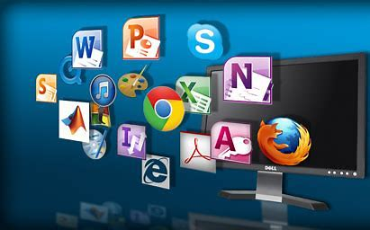

| II | OSA | PA | ECO | Tabela | BD1 | DD | FI | PW |
|---|

Operação de software refere-se ao conjunto de atividades e processos que garantem o funcionamento eficaz e eficiente de um software em um ambiente de produção, incluindo instalação, configuração e manutenção. Por outro lado, software aplicativo é um tipo de software projetado para atender às necessidades do usuário, permitindo a execução de tarefas específicas, como processamento de texto ou planilhas.
Software de sistema: É aquele que controla o funcionamento básico do dispositivo, como o sistema operacional (Windows, macOS, Linux, Android, iOS). Ele gerencia a memória, os arquivos e permite que outros programas funcionem.
Software de aplicação: Este é o software que usamos para realizar tarefas específicas, como navegar na internet, assistir vídeos, editar documentos ou jogar. Exemplos são o Microsoft Word, Google Chrome, e até o WhatsApp.
O que é um Programa: O programa é uma sequência de comandos, ou código, que realizam uma tarefa específica no dispositivo. Ele pode ser considerado como uma “instrução” para o computador realizar algo. Quando falamos em programas, estamos nos referindo a um tipo específico de software que executa uma função definida.
O aplicativo, muitas vezes chamado de app, é um tipo de programa feito para executar uma tarefa específica. Ele normalmente tem uma interface amigável e é voltado para o usuário final. Hoje em dia, o termo aplicativo é mais utilizado para programas que rodamos em smartphones, tablets ou até em computadores.